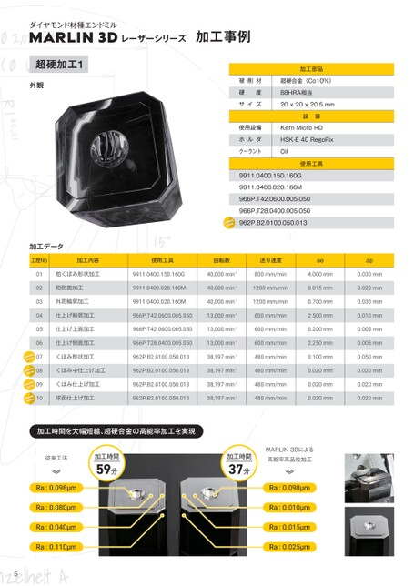

p.5加工事例 超硬加工1

ダイヤモンド材種エンドミル
MARLIN3DレーザーシリーズMARLIN3Dレーザーシリーズ 加工事例 加工事例
超硬加工1
加工部品
外観 外観 被削材 超硬合金(Co10%)被削材 超硬合金(Co10%)
硬度 88HRA相当
サイズ 20x20x20.5mm
設備
使用設備 KernMicroHD
ホルダ HSK-E40RegoFix
クーラント Oil
使用工具
9911.0400.150.160G
9911.0400.020.160M
966P.T42.0600.005.050
966P.T28.0400.005.050
962P.B2.0100.050.013
加工データ
工程No 加工内容 工程No使用工具加工内容 回転数 使用工具送り速度 回転数 ae 送り速度 ap
01 粗くぼみ形状加工 9911.0400.150.160G 01 粗くぼみ形状加工40,000min-19911.0400.150.160G800mm/min 40,000min-1 4.000mm 800mm/min 0.030mm 4.000mm
02 粗側面加工 9911.0400.020.160M 02 粗側面加工 40,000min-19911.0400.020.160M1200mm/min 40,000min-1 0.015mm 1200mm/min 0.020mm 0.015mm
03 外周輪郭加工 9911.0400.020.160M 03 外周輪郭加工 40,000min-19911.0400.020.160M1200mm/min 40,000min-1 0.700mm 1200mm/min 0.030mm 0.700mm
04 仕上げ輪郭加工 966P.T42.0600.005.050 04 仕上げ輪郭加工 13,000min-1966P.T42.0600.005.050 600mm/min 13,000min-1 2.500mm 600mm/min 0.010mm 2.500mm
05 仕上げ上面加工 966P.T42.0600.005.050 05 仕上げ上面加工 13,000min-1966P.T42.0600.005.050 600mm/min 13,000min-1 0.200mm 600mm/min 0.005mm 0.200mm
06 仕上げ側面加工 966P.T28.0400.005.050 06 仕上げ側面加工 13,000min-1966P.T28.0400.005.050 600mm/min 13,000min-1 2.250mm 600mm/min 0.005mm 2.250mm
07 くぼみ形状加工 962P.B2.0100.050.013くぼみ形状加工 07 38,197min-1 962P.B2.0100.050.013 480mm/min 38,197min-1 0.100mm 480mm/min 0.050mm 0.100mm
08 くぼみ中仕上げ加工 962P.B2.0100.050.013くぼみ中仕上げ加工38,197min-1962P.B2.0100.050.013 08 480mm/min 38,197min-1 0.020mm 480mm/min 0.020mm 0.020mm
09 くぼみ仕上げ加工 962P.B2.0100.050.013くぼみ仕上げ加工38,197min-1 09 962P.B2.0100.050.013 480mm/min 38,197min-1 0.020mm 480mm/min 0.020mm 0.020mm
10 球面仕上げ加工 962P.B2.0100.050.013球面仕上げ加工 10 38,197min-1962P.B2.0100.050.013 480mm/min 38,197min-1 0.020mm 480mm/min 0.020mm 0.020mm
加工時間を大幅短縮、超硬合金の高能率加工を実現
MARLIN3Dによる
従来工法 加工時間 従来工法 加工時間 加工時間 高能率高品位加工 加工時間 高能率高品位加工
59分 59分 37分 37分
Ra:0.098μm Ra:0.098μm
Ra:0.080μm Ra:0.080μm Ra:0.010μm Ra:0.010μm
Ra:0.040μm Ra:0.040μm Ra:0.015μm Ra:0.015μm
Ra:0.110μm Ra:0.110μm Ra:0.025μm Ra:0.025μm
5